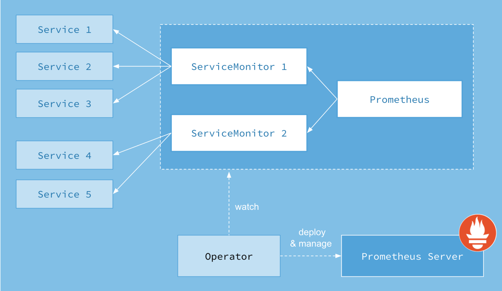
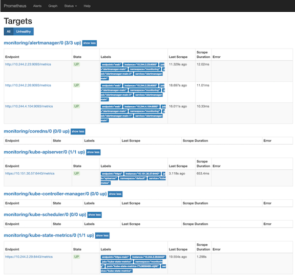
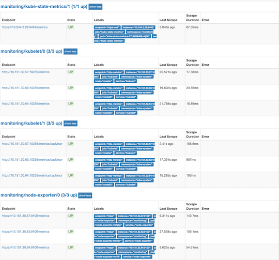
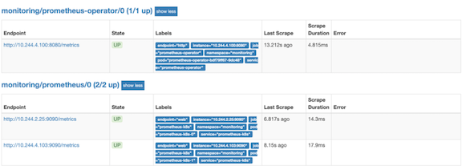
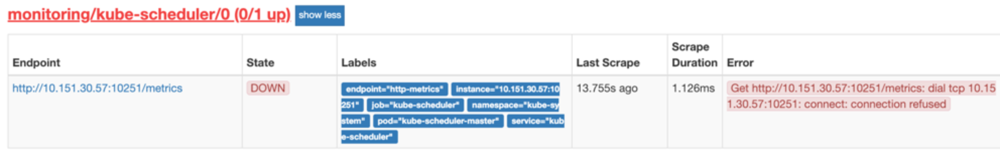
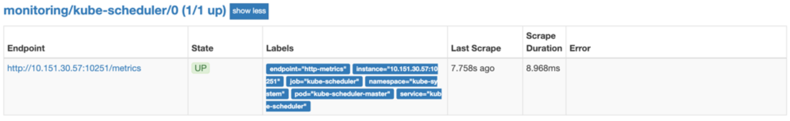
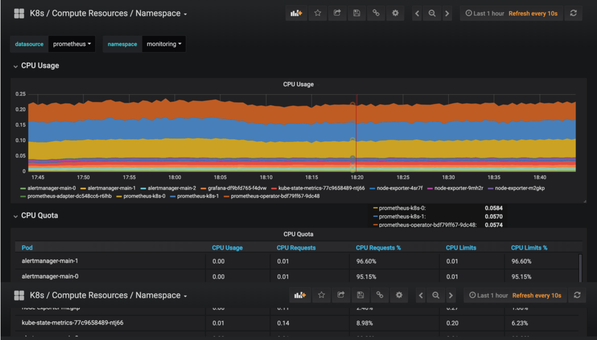
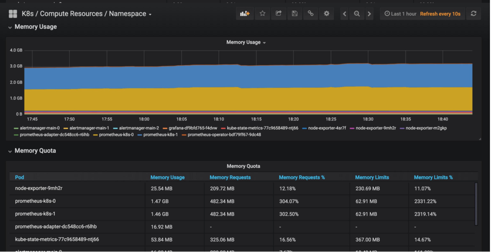

第一节 Prometheus Operator 初体验
前面的课程中我们学习了用自定义的方式来对 Kubernetes 集群进行监控，但是还是有一些缺陷，比如 Prometheus、AlertManager 这些组件服务本身的高可用，当然我们也完全可以用自定义的方式来实现这些需求，我们也知道 Promethues 在代码上就已经对 Kubernetes 有了原生的支持，可以通过服务发现的形式来自动监控集群，
因此我们可以使用另外一种更加高级的方式来部署 Prometheus：Operator 框架。
1 Operator
Operator 是由 CoreOS 公司开发的，用来扩展 Kubernetes API，特定的应用程序控制器，它用来创建、配置和管理复杂的有状态应用，如数据库、缓存和监控系统。
Operator基于 Kubernetes 的资源和控制器概念之上构建，但同时又包含了应用程序特定的一些专业知识，比如创建一个数据库的Operator ，则必须对创建的数据库的各种运维方式非常了解，创建Operator的关键是CRD（自定义资源）的设计。
CRD是对Kubernetes API的扩展，Kubernetes中的每个资源都是一个API对象的集合，例如我们在YAML文件里定义的那些spec都是对Kubernetes中的资源对象的定义，所有的自定义资源可以跟Kubernetes中内建的资源一样使用kubectl操作。
Operator 是将运维人员对软件操作的知识给代码化，同时利用 Kubernetes 强大的抽象来管理大规模的软件应用。目前CoreOS官方提供了几种Operator的实现，其中就包括我们今天的主角：Prometheus Operator，Operator的核心实现就是基于 Kubernetes 的以下两个概念：
- 资源：对象的状态定义
- 控制器：观测、分析和行动，以调节资源的分布
当然我们如果有对应的需求也完全可以自己去实现一个Operator，接下来我就来给大家详细介绍下Prometheus-Operator的使用方法。
2 介绍
首先我们先来了解下 Prometheus-Operator的架构图：

上图是 Prometheus-Operator 官方提供的架构图，其中 Operator是最核心的部分，作为一个控制器，他会去创建Prometheus、ServiceMonitor、AlertManager 以及 PrometheusRule 4个CRD资源对象，然后会一直监控并维持这4个资源对象的状态。
- 其中创建的
prometheus这种资源对象就是作为Prometheus Server存在， - 而
ServiceMonitor就是exporter的各种抽象， exporter前面我们已经学习了，是用来提供专门提供metrics数据接口的工具，
Prometheus就是通过 ServiceMonitor 提供的 metrics 数据接口去 pull 数据的，当然 alertmanager 这种资源对象就是对应的 AlertManager 的抽象，而 PrometheusRule 是用来被 Prometheus 实例使用的报警规则文件。
这样我们要在集群中监控什么数据，就变成了直接去操作 Kubernetes 集群的资源对象了，是不是方便很多了。上图中的 Service 和 ServiceMonitor 都是 Kubernetes 的资源，一个 ServiceMonitor 可以通过 labelSelector 的方式去匹配一类 Service，Prometheus 也可以通过 labelSelector去匹配多个ServiceMonitor。
2 安装
我们这里直接通过 Prometheus-Operator 的源码来进行安装，当然也可以用 Helm 来进行一键安装，我们采用源码安装可以去了解更多的实现细节。首页将源码 Clone 下来：
$ git clone https://github.com/coreos/prometheus-operator
$ cd contrib/kube-prometheus/manifests/
$ ls
00namespace-namespace.yaml node-exporter-clusterRole.yaml
0prometheus-operator-0alertmanagerCustomResourceDefinition.yaml node-exporter-daemonset.yaml
......
进入到 manifests目录下面，这个目录下面包含我们所有的资源清单文件，我们需要对其中的文件 prometheus-serviceMonitorKubelet.yaml 进行简单的修改.
因为默认情况下，这个 ServiceMonitor 是关联的 kubelet 的 10250 端口去采集的节点数据，而我们前面说过为了安全，这个 metrics数据已经迁移到10255这个只读端口上面去了，我们只需要将文件中的https-metrics更改成http-metrics即可，这个在 Prometheus-Operator 对节点端点同步的代码中有相关定义，感兴趣的可以点此查看完整代码：
Subsets: []v1.EndpointSubset{
{
Ports: []v1.EndpointPort{
{
Name: "https-metrics",
Port: 10250,
},
{
Name: "http-metrics",
Port: 10255,
},
{
Name: "cadvisor",
Port: 4194,
},
},
},
},
修改完成后，直接在该文件夹下面执行创建资源命令即可：
$ kubectl apply -f .
部署完成后，会创建一个名为monitoring的 namespace，所以资源对象对将部署在改命名空间下面，此外 Operator 会自动创建4个 CRD 资源对象：
$ kubectl get crd |grep coreos
alertmanagers.monitoring.coreos.com 5d
prometheuses.monitoring.coreos.com 5d
prometheusrules.monitoring.coreos.com 5d
servicemonitors.monitoring.coreos.com 5d
可以在 monitoring 命名空间下面查看所有的 Pod，其中 alertmanager 和 prometheus 是用 StatefulSet 控制器管理的，其中还有一个比较核心的 prometheus-operator 的 Pod，用来控制其他资源对象和监听对象变化的：
$ kubectl get pods -n monitoring
NAME READY STATUS RESTARTS AGE
alertmanager-main-0 2/2 Running 0 21h
alertmanager-main-1 2/2 Running 0 21h
alertmanager-main-2 2/2 Running 0 21h
grafana-df9bfd765-f4dvw 1/1 Running 0 22h
kube-state-metrics-77c9658489-ntj66 4/4 Running 0 20h
node-exporter-4sr7f 2/2 Running 0 21h
node-exporter-9mh2r 2/2 Running 0 21h
node-exporter-m2gkp 2/2 Running 0 21h
prometheus-adapter-dc548cc6-r6lhb 1/1 Running 0 22h
prometheus-k8s-0 3/3 Running 1 21h
prometheus-k8s-1 3/3 Running 1 21h
prometheus-operator-bdf79ff67-9dc48 1/1 Running 0 21h
查看创建的 Service:
$ kubectl get svc -n monitoring
NAME TYPE CLUSTER-IP EXTERNAL-IP PORT(S) AGE
alertmanager-main ClusterIP 10.110.204.224 <none> 9093/TCP 23h
alertmanager-operated ClusterIP None <none> 9093/TCP,6783/TCP 23h
grafana ClusterIP 10.98.191.31 <none> 3000/TCP 23h
kube-state-metrics ClusterIP None <none> 8443/TCP,9443/TCP 23h
node-exporter ClusterIP None <none> 9100/TCP 23h
prometheus-adapter ClusterIP 10.107.201.172 <none> 443/TCP 23h
prometheus-k8s ClusterIP 10.107.105.53 <none> 9090/TCP 23h
prometheus-operated ClusterIP None <none> 9090/TCP 23h
prometheus-operator ClusterIP None <none> 8080/TCP 23h
可以看到上面针对 grafana 和 prometheus 都创建了一个类型为 ClusterIP 的 Service，当然如果我们想要在外网访问这两个服务的话可以通过创建对应的 Ingress 对象或者使用 NodePort 类型的 Service，我们这里为了简单，直接使用 NodePort 类型的服务即可，编辑 grafana 和 prometheus-k8s这两个 Service，将服务类型更改为 NodePort:
$ kubectl edit svc grafana -n monitoring
$ kubectl edit svc prometheus-k8s -n monitoring
$ kubectl get svc -n monitoring
NAME TYPE CLUSTER-IP EXTERNAL-IP PORT(S) AGE
grafana NodePort 10.98.191.31 <none> 3000:32333/TCP 23h
prometheus-k8s NodePort 10.107.105.53 <none> 9090:30166/TCP 23h
......
kubectl edit svc -n # 直接将service的clusterIP改为nodeport
更改完成后，我们就可以通过 NodeIP:NodePort 去访问上面的两个服务了，比如查看 prometheus 的 targets 页面：



3 配置
我们可以看到大部分的配置都是正常的，只有两三个没有管理到对应的监控目标，比如 kube-controller-manager 和 kube-scheduler 这两个系统组件，这就和 ServiceMonitor 的定义有关系了，
我们先来查看下 kube-scheduler 组件对应的 ServiceMonitor 资源的定义：(prometheus-serviceMonitorKubeScheduler.yaml)
apiVersion: monitoring.coreos.com/v1
kind: ServiceMonitor
metadata:
labels:
k8s-app: kube-scheduler
name: kube-scheduler
namespace: monitoring
spec:
endpoints:
- interval: 30s # 每30s获取一次信息
port: http-metrics # 对应service的端口名
jobLabel: k8s-app
namespaceSelector: # 表示去匹配某一命名空间中的service，如果想从所有的namespace中匹配用any: true
matchNames:
- kube-system
selector: # 匹配的 Service 的labels，如果使用mathLabels，则下面的所有标签都匹配时才会匹配该service，如果使用matchExpressions，则至少匹配一个标签的service都会被选择
matchLabels:
k8s-app: kube-scheduler
上面是一个典型的 ServiceMonitor 资源文件的声明方式，上面我们通过 selector.matchLabels 在 kube-system 这个命名空间下面匹配具有 k8s-app=kube-scheduler 这样的 Service，但是我们系统中根本就没有对应的 Service，所以我们需要手动创建一个 Service：（prometheus-kubeSchedulerService.yaml）
apiVersion: v1
kind: Service
metadata:
namespace: kube-system
name: kube-scheduler
labels:
k8s-app: kube-scheduler
spec:
selector:
component: kube-scheduler
ports:
- name: http-metrics
port: 10251
targetPort: 10251
protocol: TCP
10251 是 kube-scheduler 组件 metrics 数据所在的端口，10252 是 kube-controller-manager 组件的监控数据所在端口。
其中最重要的是上面 labels 和 selector 部分，labels 区域的配置必须和我们上面的 ServiceMonitor 对象中的 selector 保持一致，selector 下面配置的是 component=kube-scheduler，为什么会是这个 label 标签呢，我们可以去 describe 下 kube-scheduler 这个 Pod：
$ kubectl describe pod kube-scheduler-master -n kube-system
Name: kube-scheduler-master
Namespace: kube-system
Node: master/10.151.30.57
Start Time: Sun, 05 Aug 2018 18:13:32 +0800
Labels: component=kube-scheduler
tier=control-plane
......
我们可以看到这个 Pod 具有component=kube-scheduler和tier=control-plane这两个标签，而前面这个标签具有更唯一的特性，所以使用前面这个标签较好，这样上面创建的 Service 就可以和我们的 Pod 进行关联了，直接创建即可：
$ kubectl create -f prometheus-kubeSchedulerService.yaml
$ kubectl get svc -n kube-system -l k8s-app=kube-scheduler
NAME TYPE CLUSTER-IP EXTERNAL-IP PORT(S) AGE
kube-scheduler ClusterIP 10.102.119.231 <none> 10251/TCP 18m
创建完成后，隔一小会儿后去 prometheus 查看 targets 下面 kube-scheduler 的状态：

我们可以看到现在已经发现了 target，但是抓取数据结果出错了，这个错误是因为我们集群是使用 kubeadm 搭建的，其中 kube-scheduler 默认是绑定在127.0.0.1上面的，而上面我们这个地方是想通过节点的 IP 去访问，所以访问被拒绝了，我们只要把 kube-scheduler 绑定的地址更改成0.0.0.0即可满足要求，由于 kube-scheduler 是以静态 Pod 的形式运行在集群中的，所以我们只需要更改静态 Pod 目录下面对应的 YAML 文件即可：
$ ls /etc/kubernetes/manifests/
etcd.yaml kube-apiserver.yaml kube-controller-manager.yaml kube-scheduler.yaml
将 kube-scheduler.yaml 文件中 -command 的 --address 地址更改成 0.0.0.0：
containers:
- command:
- kube-scheduler
- --leader-elect=true
- --kubeconfig=/etc/kubernetes/scheduler.conf
- --address=0.0.0.0
修改完成后我们将该文件从当前文件夹中移除，隔一会儿再移回该目录，就可以自动更新了，然后再去看 prometheus 中 kube-scheduler 这个 target 是否已经正常了：

大家可以按照上面的方法尝试去修复下 kube-controller-manager 组件的监控。
上面的监控数据配置完成后，现在我们可以去查看下 grafana 下面的 dashboard，同样使用上面的 NodePort 访问即可，第一次登录使用 admin:admin 登录即可，进入首页后，可以发现已经和我们的 Prometheus 数据源关联上了，正常来说可以看到一些监控图表了：

